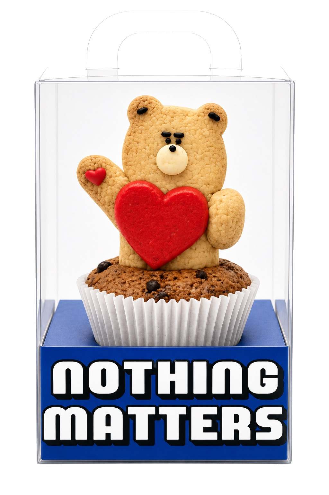
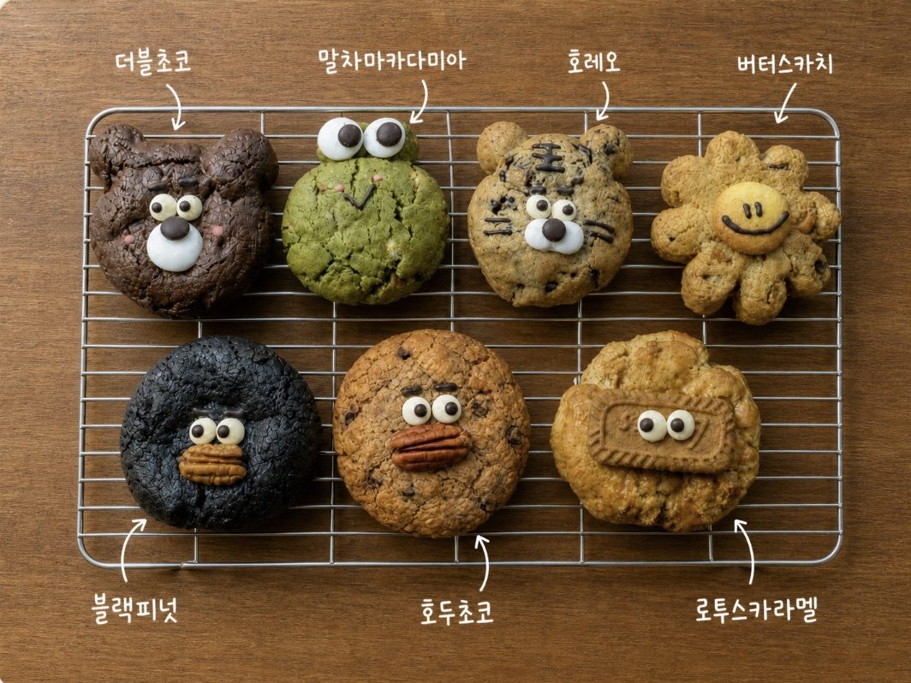

김포공항 근처에서 쿠키나 디저트 선물을 픽업할 수 있나요?
네. 낫띵메터스는 김포공항과 송정역 인근 서울 강서구 공항동에 있는 예약 제작 쿠키 작업실입니다. 미리 주문한 쿠키 선물을 확정한 일정에 맞춰 픽업할 수 있습니다.
PICKUP IN GONGHANG-DONG
김포공항 근처에서 쿠키나 디저트 선물을 찾고 있다면, 송정역 인근 공항동 낫띵메터스 작업실에서 예약 제작한 쿠키를 픽업할 수 있어요. 브루키, 수제꾸덕쿠키, 행운쿠키, 쿠키크루와 답례품 주문을 확인한 뒤 네이버플레이스에서 픽업 일정을 먼저 예약해주세요.
예약 없이 방문하시면 현장 구매가 어렵습니다.

QUICK LOCATION
서울 강서구 송정로 25 1층
공항동 작업실에서 예약한 주문을 픽업하는 방식입니다.
HOW TO PICK UP
원하는 쿠키와 필요한 수량, 날짜를 먼저 알려주세요.
제작 가능 일정과 수령할 날짜·시간을 함께 확인합니다.
확정한 일정에 공항동 작업실로 방문해 주문을 받아가세요.
GIMPO AIRPORT COOKIE GUIDE
네. 낫띵메터스는 김포공항과 송정역 인근 서울 강서구 공항동에 있는 예약 제작 쿠키 작업실입니다. 미리 주문한 쿠키 선물을 확정한 일정에 맞춰 픽업할 수 있습니다.
가능합니다. 개인 답례품부터 회사·단체 쿠키까지 날짜와 수량에 따라 상담할 수 있으며, 제작이 확정된 주문은 공항동 작업실에서 픽업할 수 있습니다.
가능합니다. 원하는 쿠키와 픽업 날짜를 미리 예약한 뒤 김포공항·송정역 인근 공항동 작업실에서 확정한 일정에 맞춰 수령해주세요.
GIMPO AIRPORT DESSERT GIFT
쿠키를 미리 예약하고 확정된 일정에 공항동 작업실에서 픽업하세요.
브루키, 수제꾸덕쿠키, 행운쿠키, 쿠키크루에서 고른 뒤 픽업을 예약하세요.
날짜와 수량에 따라 답례·단체 주문을 상담할 수 있습니다.
낫띵메터스는 김포공항 내부 매장이 아니라, 김포공항·송정역 인근 공항동의 예약 픽업 전용 작업실입니다.
MADE BY NOTHINGMATTERS
공개한 실제 제작 아카이브 일부를 먼저 확인해보세요.


VISIT CHECK
픽업은 예약한 주문을 기준으로 안내합니다. 방문 전 일정 확인이 필요해요.
제작과 수령이 연결되므로 필요한 날짜와 시간을 먼저 알려주세요.
차량 퀵 가능 여부는 일정과 수량에 따라 함께 확인합니다.
FIND THE STUDIO
낫띵메터스는 김포공항과 송정역 인근, 서울 강서구 공항동에 있습니다. 방문 전에는 주소를 지도에서 확인하고 예약한 픽업 일정에 맞춰 와주세요.
PICKUP ORDERS
디저트 선물, 작은 쿠키 선물, 답례품으로 준비할 수 있는 현재 OUR COOKIES 제품입니다. 제품을 먼저 확인하고 픽업 날짜를 예약해주세요.



답례품이나 여러 개가 필요한가요? 답례·단체 주문 보기 →회사·행사 주문이라면 기업행사 쿠키 안내 →
PICKUP FAQ
네. 김포공항·송정역 인근 공항동 작업실에서 예약한 쿠키를 픽업할 수 있습니다. 낫띵메터스는 김포공항 내부 매장이 아니며, 방문 전 픽업 예약이 필요합니다.
브루키, 수제꾸덕쿠키, 행운쿠키, 쿠키크루를 현재 OUR COOKIES에서 확인할 수 있습니다. 원하는 제품을 고른 뒤 픽업 일정을 예약해주세요.
가능합니다. 개인 답례품부터 회사·단체 쿠키까지 날짜와 수량에 따라 상담할 수 있으며, 제작이 확정된 주문은 공항동 작업실에서 픽업할 수 있습니다.
아니요. 낫띵메터스는 예약 픽업 전용 작업실입니다. 예약 없이 방문하면 현장 구매가 어렵습니다. 네이버플레이스에서 픽업 일정을 먼저 예약해주세요.
네. 원하는 쿠키와 픽업 날짜를 확인한 뒤 네이버플레이스에서 일정을 먼저 예약해주세요. 확정한 일정에 맞춰 공항동 작업실에서 수령할 수 있습니다.
차량 퀵 가능 여부는 일정과 수량에 따라 상담으로 함께 확인합니다.
PICKUP READY
날짜와 수량을 알려주시면 예약 픽업 흐름부터 안내해드릴게요.